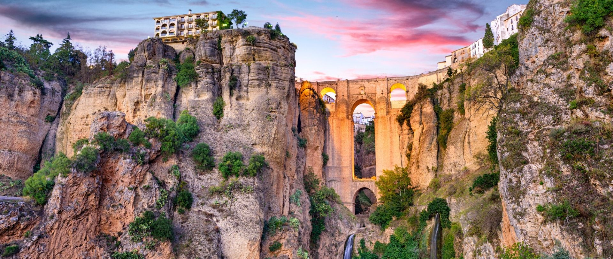

Ronda, una de las ciudades con mayor encanto de Andalucía, se sitúa al noroeste de la provincia de Málaga, a unos 113 km. Esta localidad malagueña divide su casco urbano a ambos lados del Tajo, un desfiladero de más de 150 metros de profundidad por dónde discurre el río Guadalevín. Su casco antiguo está declarado Bien de Interés Cultural.
Sus calles, sus monumentos, su cultura, sus fiestas, su gente, su gastronomía y toda la naturaleza que la envuelve hace de esta localidad una de las más emblemáticas de España.
Ronda es una de las ciudades más antiguas de España. Sus orígenes se remontan al Neolítico, según los descubrimientos arqueológicos realizados en su casco antiguo. Sin embargo, la presencia del hombre por estas tierras es, sin lugar a duda, mucho anterior. De ella son buena prueba una serie de yacimientos localizados en varias cuevas de la zona, entre los que destaca el de la Cueva de la Pileta por ser uno de los mejores exponentes del arte rupestre del Paleolítico andaluz.
También el período islámico destaca por su trascendencia y por el legado cultural que dejó y que aún es perceptible en muchas de sus manifestaciones (urbanismo, gastronomía, tradiciones, sistemas de cultivo, etc). Es en este momento cuando Ronda se configura y consolida como ciudad, llegando a ser la capital de una de las Kuras (provincias) en las que se dividió Al-Andalus (concretamente, la de Takurunna); e, incluso, llegó a constituirse en reino independiente (los llamados reinos de taifas) tras la desarticulación del califato cordobés. Herencia de la época, y recorriendo la ciudad, encontraremos la Puerta de Almocobar, las Murallas de la Cijara, los Baños, el Alminar de San Sebastián y la Muralla de la Albacara, entre otros.
Sin embargo, el papel más significativo, y por el que es mejor conocida, le llegará con el reino nazarí de Granada, ya que su proximidad a los territorios conquistados por los castellanos le supondrá erigirse, tanto a la ciudad como a la comarca, en enclave fronterizo de especial importancia. Con la conquista de la ciudad por los Reyes Católicos (1485) se produjeron profundas transformaciones económicas y culturales que aún hoy en día es posible apreciar en la fisionomía de la estructura urbana: el Palacio de Mondragón, numerosas iglesias (Santa María la Mayor, Espíritu Santo, Santa Cecilia, Padre Jesús...etc.)
Finalmente será el siglo dieciocho el que marque, en esta época más moderna, las pautas definitivas del papel que Ronda tendrá en el contexto de Andalucía. Será cuando se construyan los monumentos más significativos y emblemáticos de la aristocracia de entonces y de la Ronda actual: el Puente Nuevo y la Plaza de Toros.